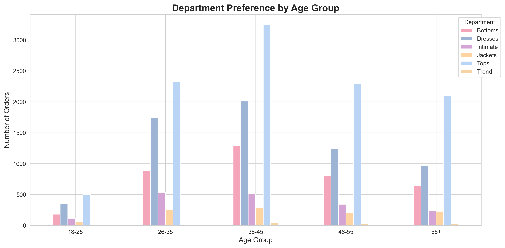
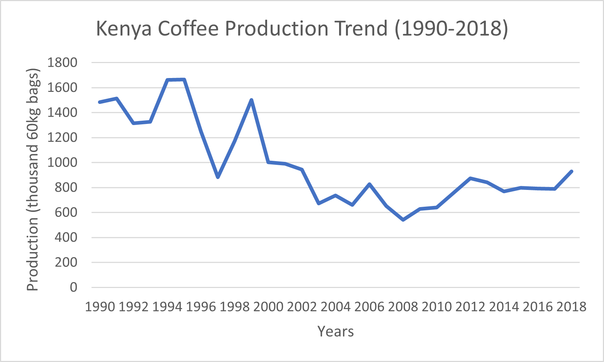

Hello! I’m Beryl, a data enthusiast from Nairobi. I enjoy exploring SQL, statistics, and data analysis projects that connect technical insights with real-world stories. My passion is turning raw data into meaningful insights and sharing them in clear, engaging ways.

This project analyzes women’s clothing reviews to uncover customer preferences, rating patterns, and age group insights. It uses Python (pandas, matplotlib, seaborn) for data cleaning, visualization, and statistical exploration.
View on GitHub →
This project analyzes Kenya's 37% coffee production decline from 1990-2018, revealing how political instability drove the country from 3rd to 4th place in East African production. Using Excel for trend analysis and comparative benchmarking, I identified a recoverable 200-tonne gap and developed strategic recovery recommendations.
View on Github →If you'd like to connect, here are my links: